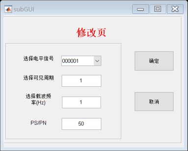

function varargout = subGUI(varargin) % SUBGUI MATLAB code for subGUI.fig % SUBGUI, by itself, creates a new SUBGUI or raises the existing % singleton*. % % H = SUBGUI returns the handle to a new SUBGUI or the handle to % the existing singleton*. % % SUBGUI('CALLBACK',hObject,eventData,handles,...) calls the local % function named CALLBACK in SUBGUI.M with the given input arguments. % % SUBGUI('Property','Value',...) creates a new SUBGUI or raises the % existing singleton*. Starting from the left, property value pairs are % applied to the GUI before subGUI_OpeningFcn gets called. An % unrecognized property name or invalid value makes property application % stop. All inputs are passed to subGUI_OpeningFcn via varargin. % % *See GUI Options on GUIDE's Tools menu. Choose "GUI allows only one % instance to run (singleton)". % % See also: GUIDE, GUIDATA, GUIHANDLES % Edit the above text to modify the response to help subGUI % Last Modified by GUIDE v2.5 19-Nov-2019 21:25:26 % Begin initialization code - DO NOT EDIT gui_Singleton = 1; gui_State = struct('gui_Name', mfilename, ... 'gui_Singleton', gui_Singleton, ... 'gui_OpeningFcn', @subGUI_OpeningFcn, ... 'gui_OutputFcn', @subGUI_OutputFcn, ... 'gui_LayoutFcn', [] , ... 'gui_Callback', []); if nargin && ischar(varargin{1}) gui_State.gui_Callback = str2func(varargin{1}); end if nargout [varargout{1:nargout}] = gui_mainfcn(gui_State, varargin{:}); else gui_mainfcn(gui_State, varargin{:}); end % End initialization code - DO NOT EDIT % --- Executes just before subGUI is made visible. function subGUI_OpeningFcn(hObject, eventdata, handles, varargin) % This function has no output args, see OutputFcn. % hObject handle to figure % eventdata reserved - to be defined in a future version of MATLAB % handles structure with handles and user data (see GUIDATA) % varargin command line arguments to subGUI (see VARARGIN) % Choose default command line output for subGUI handles.output = hObject; % Update handles structure guidata(hObject, handles); global inp; handles.inp=inp; inp='000001'; global T; handles.T=T; global f; handles.f=f; global Psnr; handles.Psnr=Psnr; %给下拉框提供00000~111111内容 strc={};str=zeros(1,63); for n=1:63 str(n)=n; strc=[strc,EJZ(dec2bin(str(n)))]; % strc(n)=dec2bin(str(n)) % strc(n)=num2cell(str(n)); end % str={'000000','000001','000010'}; set(handles.popupmenu1,'string',strc); % Choose default command line output for subGUI handles.output = hObject; % Update handles structure guidata(hObject, handles); %将下拉框中的内容返回给上级GUI % handles.value= varargin{1}; % guidata(hObject,handles); % varargout{1} = handles.out1; % delete(handles.figure1); % UIWAIT makes subGUI wait for user response (see UIRESUME) % uiwait(handles.figure1); % --- Outputs from this function are returned to the command line. function varargout = subGUI_OutputFcn(hObject, eventdata, handles) % varargout cell array for returning output args (see VARARGOUT); % hObject handle to figure % eventdata reserved - to be defined in a future version of MATLAB % handles structure with handles and user data (see GUIDATA) % Get default command line output from handles structure varargout{1} = handles.output; % --- Executes on slider movement. function slider1_Callback(hObject, eventdata, handles) % hObject handle to slider1 (see GCBO) % eventdata reserved - to be defined in a future version of MATLAB % handles structure with handles and user data (see GUIDATA) % Hints: get(hObject,'Value') returns position of slider % get(hObject,'Min') and get(hObject,'Max') to determine range of slider % --- Executes during object creation, after setting all properties. function slider1_CreateFcn(hObject, eventdata, handles) % hObject handle to slider1 (see GCBO) % eventdata reserved - to be defined in a future version of MATLAB % handles empty - handles not created until after all CreateFcns called % Hint: slider controls usually have a light gray background. if isequal(get(hObject,'BackgroundColor'), get(0,'defaultUicontrolBackgroundColor')) set(hObject,'BackgroundColor',[.9 .9 .9]); end % --- Executes on selection change in listbox1. function listbox1_Callback(hObject, eventdata, handles) % hObject handle to listbox1 (see GCBO) % eventdata reserved - to be defined in a future version of MATLAB % handles structure with handles and user data (see GUIDATA) % Hints: contents = cellstr(get(hObject,'String')) returns listbox1 contents as cell array % contents{get(hObject,'Value')} returns selected item from listbox1 % --- Executes during object creation, after setting all properties. function listbox1_CreateFcn(hObject, eventdata, handles) % hObject handle to listbox1 (see GCBO) % eventdata reserved - to be defined in a future version of MATLAB % handles empty - handles not created until after all CreateFcns called % Hint: listbox controls usually have a white background on Windows. % See ISPC and COMPUTER. if ispc && isequal(get(hObject,'BackgroundColor'), get(0,'defaultUicontrolBackgroundColor')) set(hObject,'BackgroundColor','white'); end % --- Executes on selection change in popupmenu1. function popupmenu1_Callback(hObject, eventdata, handles) % hObject handle to popupmenu1 (see GCBO) % eventdata reserved - to be defined in a future version of MATLAB % handles structure with handles and user data (see GUIDATA) global inp; val = get(handles.popupmenu1,'value'); %这里获取的是popupmenu的顺序，类似于第一个第二个，相当于list的地址 list = get(handles.popupmenu1,'string') ; %这里获取的是cell数据结构list{}的内容 inp=list{val}; handles.inp=inp; % Hints: contents = cellstr(get(hObject,'String')) returns popupmenu1 contents as cell array % contents{get(hObject,'Value')} returns selected item from popupmenu1 % --- Executes during object creation, after setting all properties. function popupmenu1_CreateFcn(hObject, eventdata, handles) % hObject handle to popupmenu1 (see GCBO) % eventdata reserved - to be defined in a future version of MATLAB % handles empty - handles not created until after all CreateFcns called % Hint: popupmenu controls usually have a white background on Windows. % See ISPC and COMPUTER. if ispc && isequal(get(hObject,'BackgroundColor'), get(0,'defaultUicontrolBackgroundColor')) set(hObject,'BackgroundColor','white'); end % --- Executes on button press in pushbutton1. function pushbutton1_Callback(hObject, eventdata, handles) % hObject handle to pushbutton1 (see GCBO) % eventdata reserved - to be defined in a future version of MATLAB % handles structure with handles and user data (see GUIDATA) global inp; handles.inp=inp; global T; T=str2double(get(handles.edit1,'String')); handles.T=T; global f; f=str2double(get(handles.edit2,'String')); handles.f=f; global Psnr; Psnr=str2double(get(handles.edit3,'String')); handles.Psnr=Psnr; uiwait(handles.figure1); shuzi; delete(hObject); function edit1_Callback(hObject, eventdata, handles) % hObject handle to edit1 (see GCBO) % eventdata reserved - to be defined in a future version of MATLAB % handles structure with handles and user data (see GUIDATA) % Hints: get(hObject,'String') returns contents of edit1 as text % str2double(get(hObject,'String')) returns contents of edit1 as a double % --- Executes during object creation, after setting all properties. function edit1_CreateFcn(hObject, eventdata, handles) % hObject handle to edit1 (see GCBO) % eventdata reserved - to be defined in a future version of MATLAB % handles empty - handles not created until after all CreateFcns called % Hint: edit controls usually have a white background on Windows. % See ISPC and COMPUTER. if ispc && isequal(get(hObject,'BackgroundColor'), get(0,'defaultUicontrolBackgroundColor')) set(hObject,'BackgroundColor','white'); end function edit2_Callback(hObject, eventdata, handles) % hObject handle to edit2 (see GCBO) % eventdata reserved - to be defined in a future version of MATLAB % handles structure with handles and user data (see GUIDATA) % Hints: get(hObject,'String') returns contents of edit2 as text % str2double(get(hObject,'String')) returns contents of edit2 as a double % --- Executes during object creation, after setting all properties. function edit2_CreateFcn(hObject, eventdata, handles) % hObject handle to edit2 (see GCBO) % eventdata reserved - to be defined in a future version of MATLAB % handles empty - handles not created until after all CreateFcns called % Hint: edit controls usually have a white background on Windows. % See ISPC and COMPUTER. if ispc && isequal(get(hObject,'BackgroundColor'), get(0,'defaultUicontrolBackgroundColor')) set(hObject,'BackgroundColor','white'); end % --- Executes on button press in pushbutton2. function pushbutton2_Callback(hObject, eventdata, handles) % hObject handle to pushbutton2 (see GCBO) % eventdata reserved - to be defined in a future version of MATLAB % handles structure with handles and user data (see GUIDATA) close; function edit3_Callback(hObject, eventdata, handles) % hObject handle to edit3 (see GCBO) % eventdata reserved - to be defined in a future version of MATLAB % handles structure with handles and user data (see GUIDATA) % Hints: get(hObject,'String') returns contents of edit3 as text % str2double(get(hObject,'String')) returns contents of edit3 as a double % --- Executes during object creation, after setting all properties. function edit3_CreateFcn(hObject, eventdata, handles) % hObject handle to edit3 (see GCBO) % eventdata reserved - to be defined in a future version of MATLAB % handles empty - handles not created until after all CreateFcns called % Hint: edit controls usually have a white background on Windows. % See ISPC and COMPUTER. if ispc && isequal(get(hObject,'BackgroundColor'), get(0,'defaultUicontrolBackgroundColor')) set(hObject,'BackgroundColor','white'); end